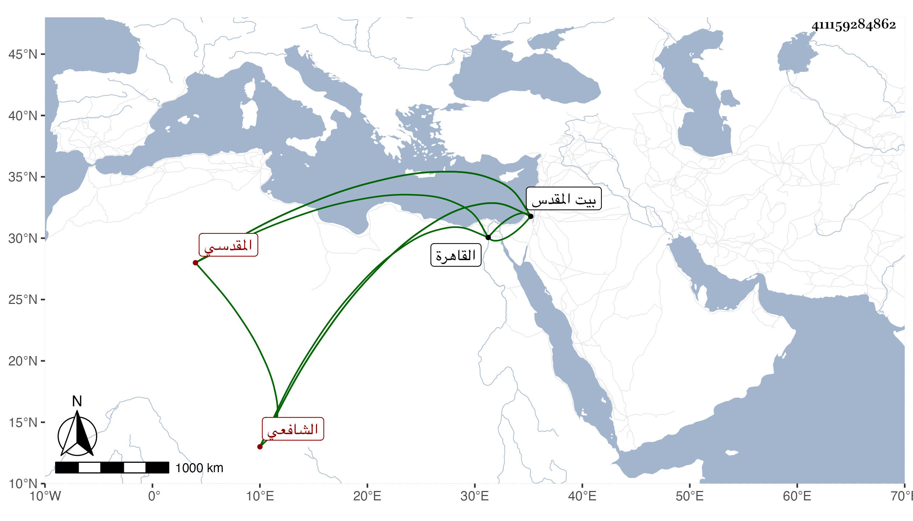

0902Sakhawi.DawLamic.ITO20230111-ara1.EIS1600.411159284862
Biography ID: 411159284862
888
محمد بن إبراهيم بن عبد الله بن محمد بن عبد الرحمن النجم بن البرهان ابن شيخنا الجمال المقدسي الشافعي ابن جماعة الماضي أبوه وجده وأخوه إسماعيل . ولد في صفر وبخطى في موضع آخر ربيع سنة ثلاث وثلاثين وثمانمائة ببيت المقدس وتفقه بجده قليلا ثم ارتحل فأخذ عن المحلي شرحه لجمع الجوامع وعن شيخنا شرحه للنخبة وعشارياته وثلاثيات البخاري كل ذلك بقراءة أخيه ، وسمع على جده فأكثر وقرأ عليه أشياء وكذا سمع على التقي القلقشندي والشمس البرموني والشهاب بن حامد والتقي بن قاضي شهبة والعز الحنبلي وابن خاله الشهاب والزينين ابن خليل القابوني وابن داود والشهابين ابن الشحام وابن محمد ابن حامد في آخرين من أهل بلده والقادمين عليها وشيخنا ونقيبه ابن يعقوب والعز بن الفرات وسارة ابنة ابن جماعة والمحلي وطائفة بالقاهرة بل قال أنه سمع على التدمري المسلسل وعلى عائشة الكنانية بعض مسند الشافعي وأجاز له ابن الطحان وابن بردس وابن ناظر الصاحبة وزينب ابنة اليافعي وخلق بل أذن له في التدريس شيخنا والمحلي والتقي بن قاضي شهبة وقال إن شيوخه يزيدون على ثلاثمائة واستقر في مشيخة الصلاحية ببيت المقدس بعد صرف الكمال بن أبي شريف وكذا خطب بالمسجد الأقصى وحدث ودرس وأفتى وذكرت له أوصاف حسنة .
